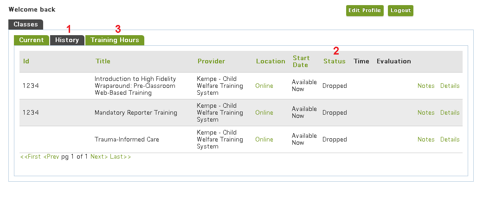

CSTI Administrative and Support Functions
Your Profile
Clicking My Account while logged in will take you to your Profile. You can find your certifications and total training hours from the current fiscal year (1) on the front page of your profile. Clicking Edit Profile (2) will allow you to update any information on your profile. Clicking the green Menu icon (3) will bring up a list of profile sections. Profile (4) will bring you back to the front page of your profile from other sections.
Access Online Training
Choosing Access Online Training (5) will open a new window. You will see a loading screen for several seconds, then be directed to a new website where you can take your web-based trainings.
[update when Moodle is ready]
Upcoming Classes
The Upcoming Classes section has three tabs: Current, istory, and Training Hours. For more information on the History and Training Hours tabs, see Training Resume.
In the Current (1) tab, you’ll see a list of all classes in which you are registered, waiting, or pending.
The first column provides a link to Drop Class (2). After entering a reason for your drop, click Submit Drop to drop the class. Your supervisor will be notified. If you need to drop a class within two days of its start date , you’ll have to contact Support.
Next, you’ll see the Title, Provider, and Location of the class. Clicking the location will open a new window with more detailed information on physical addresses.
The Start Date of all web-based trainings is Available Now. Status will show whether you are registered or waitlisted for the class. Finally, the Details (3) link will provide additional information such as the name of your facilitator and the capacity of the class.
Training Resume
The Training Resume section of your profile contains the same tabs as Upcoming Classes, with a focus on the History and Training Hours tabs.
History (1) contains a list of every class in which you have a final status (2) (See Appendix ? for details). It provides similar information as the Current tab. Training Hours (3) displays all hours you have learned along with the date of completion and class title.
Clicking Print as a PDF will produce a PDF copy of your Training Resume, which may be used as formal proof of completion for any class listed.
If you believe that you’ve completed a class but don’t see it on your training resume, check both the Current and History tabs. Web-based trainings should confer hours automatically upon completion, while in-person classes may remain in registered status for several days after the class as they are graded manually by their providers. If you don’t see the class under the Current tab, check the History tab to see if you might have been marked incomplete or no-show.
If you believe you’ve been marked incorrectly in a class, please contact Support.